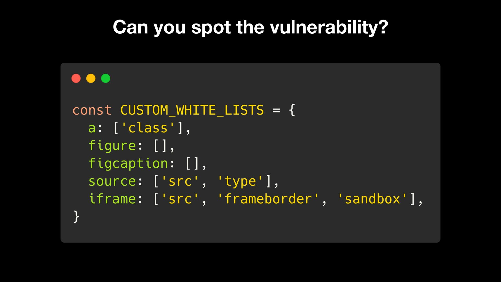

Front End and Back End Vulnerabilities
In the ever-evolving world of web security, both the dazzling storefront (front-end) and the complex engine room (back-end) of a website are vulnerable to attack. Malicious actors can exploit weaknesses in user-facing interfaces to steal data or inject malicious code, while poorly secured back-end systems leave sensitive information exposed. Here are a few vulnerabilities that can help you better understand front-end and back-end security issues.
Front End Vulnerabilities
1. Sensitive Data Exposure
For web developers and security enthusiasts, understanding a website's inner workings goes beyond the user interface. The concept of sensitive data exposure often arises, where critical information like API keys, authentication tokens, or even user data can be inadvertently leaked through the front-end code. This exposure primarily occurs due to the presence of sensitive data in plain text within the website's HTML or JavaScript source code, which can be accessed by user.
Peeking Behind the Curtain: Accessing the Page Source
The page source, essentially the website's blueprint, is written in languages like HTML, CSS, and JavaScript. While not directly visible during normal browsing, most browsers offer ways to delve into this code. Common methods include:
- Right-click Menu: Right-clicking anywhere on the webpage and selecting "View Page Source" or a similar option reveals the source code in a new tab.
- Keyboard Shortcuts: Tech-proficient users can utilize keyboard shortcuts like Ctrl + U (Windows/Linux) or Command + Option + U (Mac) to instantly access the page source.
Mitigating Obfuscation Attempts
Some websites might employ techniques to obfuscate their code, making it less readable for casual inspection. This obfuscation can involve minifying the code (removing unnecessary characters like whitespace) or using encoding techniques. However, these methods are not foolproof, and dedicated tools can often de-obfuscate the code, revealing its underlying structure.
2. HTML Injection leading to XSS
Front-end security requires vigilance beyond just examining the page source. A critical defense mechanism is validating and sanitizing user input, ensuring it adheres to expected formats and doesn't harbor hidden dangers. While back-end validation is common, some user input might be processed entirely on the front-end using JavaScript. Here's where HTML injection can sneak in.
3. Cross-Site Scripting (XSS)
An attacker can exploit an HTML injection vulnerability to launch a more powerful Cross-Site Scripting (XSS) attack. While both vulnerabilities involve injecting malicious code, XSS injects JavaScript for complex attacks on the user's machine, rather than simply adding HTML content.
4. Cross-Site Request Forgery (CSRF)
Imagine this: you're logged in to your bank account. An attacker tricks you into clicking a link or visiting a malicious website. Without you realizing it, this action triggers a request on your bank's website - a request that changes your password to something the attacker knows! This is a CSRF attack in action.
Back End Vulnerabilities
Behind the scenes, the back-end plays the role of mastermind. It's where the real magic happens, powered by programming languages like PHP, Python, Ruby, or Java. Vulnerabilities in the back-end can expose sensitive information and allow unauthorized access to the system.
NEXT ? Comming SOON...